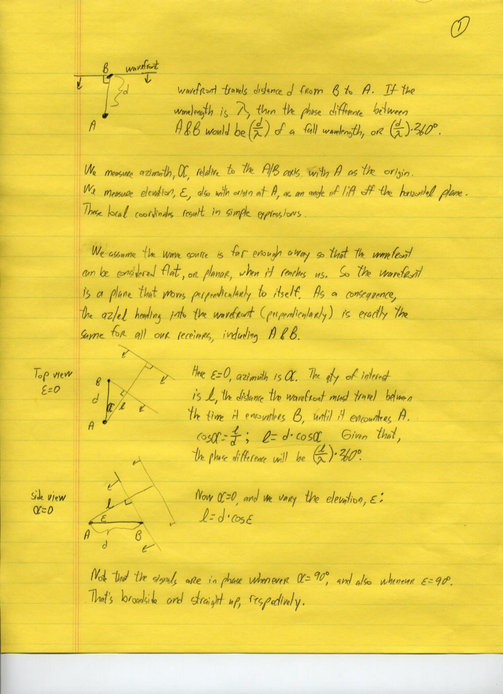
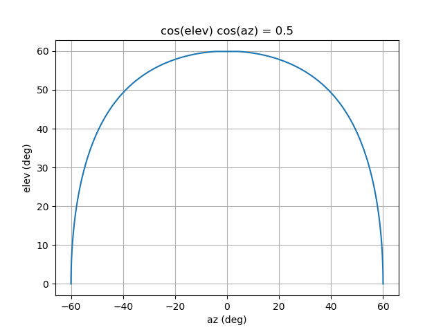
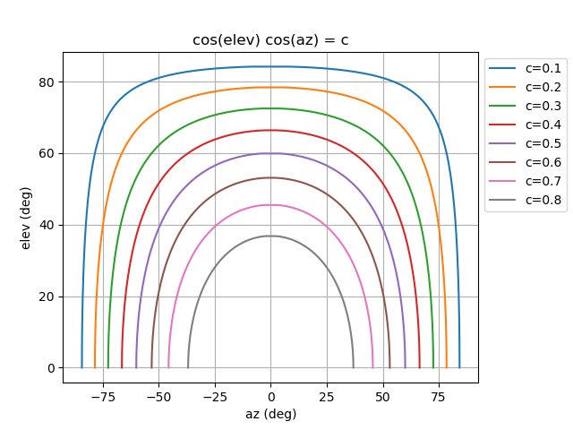
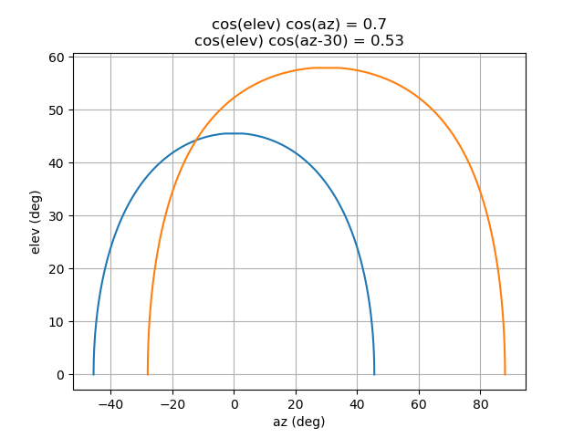

The first problem we would like to attack is the case when we have an array of antennas randomly spread out in an area of about 1 to 3 acres. In this case we want to use the array to find the azimuth and elevation of incoming signals in the HF band. What we need is an algorithm that can quickly construct a correlation table for the expected phase difference between the 3 to 10 different antennas (they are mounted on vehicles, one per vehicle). This table has to be usable from 1 to 30 MHz and for angles up to 85 degrees elevation. All the vehicles have GPS so the relative positions are known to within a couple of feet. The receive equipment can measure the phase difference fast between all the different antennas. With help of the correlation table the system can then look up the best fit and output the result (which is of course a line of bearing as well as the elevation of the incoming signal). If any vehicle moves, then a new table has to be constructed. So the algorithm must be able to take in new vehicle locations, and continually calculate the new correlation tables. - Lars
It never occurred to me that you could determine the direction, including elevation, of an incoming wave by observing a set of phase relationships among the received signals at several omnidirectional antennas. I've enjoyed thinking about this problem, which is a new one for me. Since it is somewhat awkward to express math and figures via email, I've scanned in a couple sheets of notes I made while thinking about this problem:

As I understand the problem, the core issue is to compute the expected phase relationship between two antennas, given that a signal comes from a given direction. Then you want to access a table of such data, for several antennas, to find a direction given the measured phase relationships. I assume that the signal is sufficiently far away for the incoming wavefront to be thought of as purely planar, with no significant curvature. The motion of the wavefront would then be perpendicular to that plane. This in turn implies that all the azimuth/elevation headings will be the same, at each of our receivers. For a given pair of antennas A and B with known positions, let d be the distance between them. Let us express the heading to the wavefront using azimuth and elevation from antenna A. The azimuth will be measured from this axis. The elevation angle from the ground plane. Call these angles "a" and "e" respectively. In the notes, I worked out the expression for the quantity "L", which is the distance the wavefront must travel between when it encounters one antenna (B say), until it encounters the other antenna (A say). Using these local coordinates, the expression for L is simply: L = d cos(a) cos(e) And then the phase angle between A and B is just (L/lambda) * 360 degrees, where lambda is the wavelength of the incoming signal. (Omitting sign considerations.) So it would be a simple matter to compute the table that you seek, as I understand it. You can just take the position data and desired heading, convert to the above-sketched local coordinates, do the simple calculation, and fill up your table. Of course I might have muffed the calculation. If so, tell me! (I don't mind having my early mistakes caught so that I don't go too far with bad results.) --- I would like to know the desired accuracy of the system. Then I might be able to work out how big these tables need to be. Also, note that these tables I described depend on the wavelength. So if you have 50 transmitters on different freqs, you'll need 50 tables. Note also that the stated gps accuracy of a couple feet might start to become problematical up around 30 MHz, where the wavelength is only 10 meters, or around 30 feet. Also, I'd really like to know how accurate the phase measurements are, and what the resolution is. --- Instead of using these tables and then looking for a good fit to solve the problem, it would be better if we could just take the phase measurements, wavelenth, and position data, and then just compute the heading to the wavefront. It might turn out to be feasible, and I have just begun to think about this. When you do the problem in that order, I think you have to come to terms with some issues that you get to ignore with the table approach. One such issue is that these randomly placed antennas will often be more than a wavelength away from each other. But you know where they are, so that should be okay. In general, I think what you'll end up with, at the core, is a set of equations that look something like, for example cos(a) cos(b) = 0.345 cos(a) cos(b) = 0.567 where the two equations are using different local coordinates. So you need to unify them, and then determine an "a" and "b" that make both true. Unless you're unlucky, there will be only one solution, and that is your azimuth and elevation. That would be your answer. (In these equations, the phase phase angle measurment and distance at one pair goes into the 0.345, and a different pair goes into the 0.567.) This is just a sketch, and I need to think about it more. But it might be quite feasible to do it that way, and if we can, that would be good, wouldn't it? --- So that's where I am. Any feedback would be appreciated. Todd
Hi Lars, I worked out how to find an exact unique solution for (az, el) in a large variety of cases, based on phase measurements between antennas. Recall from the previous email that a central relationship is L = d cos(a) cos(e), where d is the distance between the antennas, "a" azimuth, and "e" elevation. L is the distance the wavefront travels between the time it encounters the two antennas. The expected phase measurement is then th = (L / lambda) * 360 degrees, where lambda is the wavelength of the signal of interest. Now, if d is not too large, you can reverse the computation and compute L based on the phase measurement. I assume that you can measure phase accurately, but only between -180 and 180. You can measure d accurately, and th accurately. But you really cannot tell if one wave is, say, 1050 degrees ahead of another. The reading would say -30 degrees. So for now, let us assume that d is not too large, and in particular that it is not more than half a wavelength of interest. Then we can easily determine L from a pure phase measurement. The quantity L is really what's of interest. So given L = d cos(a) cos(e), we get cos(a) cos(e) = (L/d) =: k. I think of k as the "shrinkage factor". It is a number between zero and one that indicates how much shorter than the "d" distance the wave actually traveled. The above equation expresses the relationship between azimuth and elevation that must hold in order to be consistent with the phase measurement that was made. --- Here's an example. The distance between the antennas, d, is 10 meters, and we measure the measured phase angle between the signals at those antennas to be 60 degrees, and the frequency is 10 MHz, or 30 meters. Since d is less than a half wavelength, we easily solve 60 = (L / 30) * 360, getting L = 5 meters. In turn, the ratio L/d is 5/10, or 0.5. So the set of feasible azimuth elevation pairs is given by cos(a) cos(e) = 1/2. Here is a plot of the set of feasible pairs:

That general shape is always what such a solution set looks like. Here is a set of feasibilities for various shrinkage factors between 0 and 1:

Now suppose we make another phase measurement between a different pair of antennas, also not too far away. Really, the only other requirement is that the new axis not be parallel to the original antenna axis. One antenna can even be shared between the two pairs. We come up with an additional equation for the new antenna, and the azimuth/elevation pairs are now constrained to be cos(a) cos(e) = k2, where k2 is a potentially different shrinkage factor. It is important to note, however, that "a" and "e" are in coordinates local to the new axis. We want to express these azimuth/elevation pairs in the same coordinate system as the first ones, and this is easy to do. Recall that the actual direction to the wavefront is the same as measured from any antenna, because the source is far away. Everybody reads the actual same elevation; it's only their azimuths that are different in the local coordinate systems. So all we have to do to convert one coordinate system to another is to adjust the angle of the azimuths by the angle between the antenna pairs. Or alternately, we can convert each to global az/el by adjusting each az according to the axis deviation from north. So what happens is that we end up with two equations like this: cos(a) cos(e) = k1 cos(a+phi) cos(e) = k2 where phi is a constant we know, and k1 and k2 are each shrinkage factors. Each of those is a curve like we saw above (the second one is shifted on the a-axis), and it fairly clearly intersects at a point (or all the points). It cannot intersect at two points, for example. So that point is the only az/el pair that is consistent with our phase measurements, and is the answer. --- For example, suppose we have cos(a) cos(e) = 0.70 cos(a - 30) cos(e) = 0.53 Here they are plotted together:

We see graphically that they intersect at one point. --- It is easy and efficient to actually compute that intersection point. All you do is expand cos(a+ph) out according to the well-known relation cos(a+phi) = cos(a)cos(phi) - sin(a)sin(phi), noting that cos(phi) and sin(phi) are constants. When you simplify appropriately, you get tan(a) = (cos(phi) - (k2/k1)) / sin(phi) So an appropriate arctan of that is "a". Given "a", it is easy to get "e": cos(e) = k1 / cos(a), so "e" is an appropriate arccos of that. (It turns out that the "principle value" arctan and arccos are the ones you want). --- These are really efficient calculations. Just a few mults and divides, a few cosines, an arccos, and an arctan. Even slow hardware should be able to do many thousands of these per second. ---